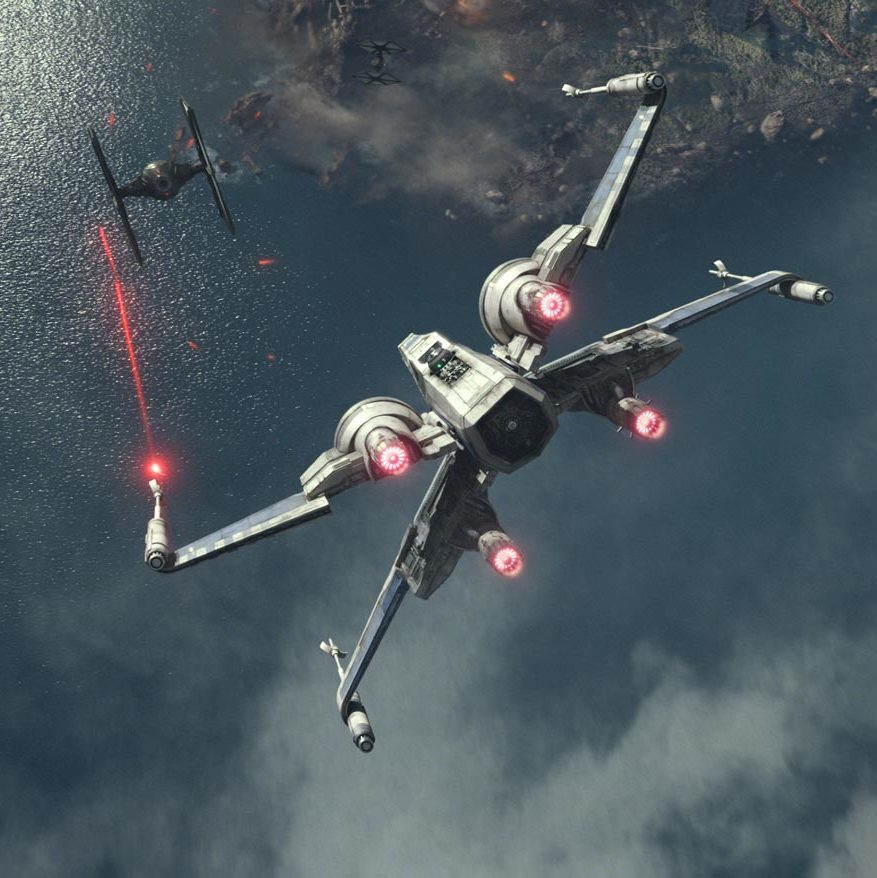
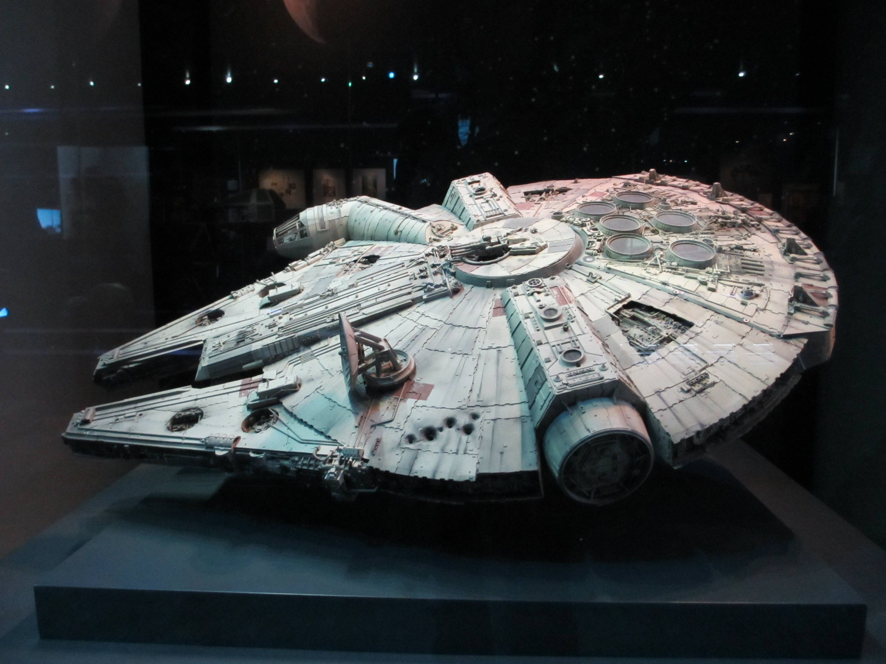

Mensaje desde Hoth
Se detecta actividad imperial cerca del perímetro. Mantén las defensas activas.
Se detecta actividad imperial cerca del perímetro. Mantén las defensas activas.
Se han interceptado señales sospechosas en la luna boscosa. Revisa comunicaciones.
Bienvenido al archivo rebelde. Aquí encontrarás información básica para preparar operaciones y coordinar recursos.
Briefing: objetivos operativos para la misión.

Caza estelar versátil.

Interceptor imperial rápido.

Transporte ligero modificado.
Consulta el hangar para más información.